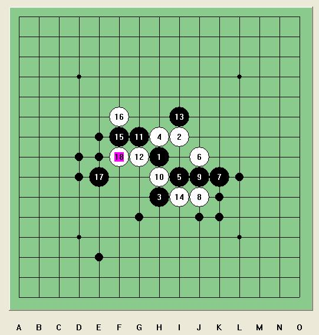
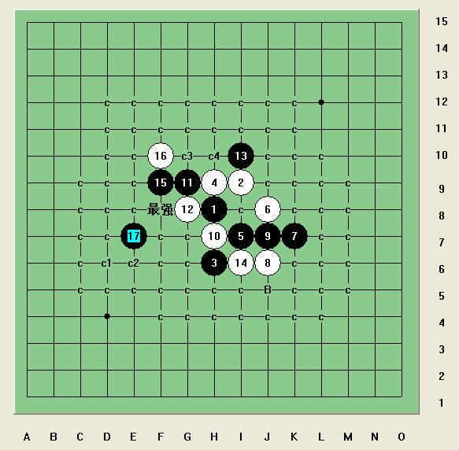
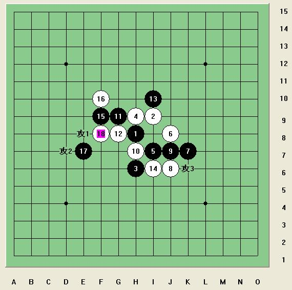

[学术讨论]围剿传说中的全明星唯一防
#1 [学术讨论]围剿传说中的全明星唯一防 作者：岳麓小棋后 发表时间：2009-4-21 17:59:46
=======上图对应的爱五子棋谱代码如下，以便你拆解：========
h8i9h6h9i7j8k7j6j7h7g9g8i10i6f9f10e7f8
======================================================
最近一直在参透李洪斌老师的这句话，“这个棋白最强防的话，黑要先在右边做准备工作，然后在左边胜。有兴趣的可以拆拆看，过程比较有趣。”
有兴趣的不妨发表看法，推荐19手或者推荐路线？？
［此帖子已被 岳麓小棋后 在 2009-4-21 18:13:13 编辑过］
［此帖子已被 茗弈小刀 在 2009-4-22 18:29:29 编辑过］
#2 Re:围剿传说中的全明星唯一防 作者：岳麓小棋后 发表时间：2009-4-21 18:07:24
#3 Re:围剿传说中的全明星唯一防 作者：茗弈小刀 发表时间：2009-4-21 18:25:18
这个17应该不能地毯杀吧？19我觉得在17左边比较好。#4 Re:围剿传说中的全明星唯一防 作者：wd1988 发表时间：2009-4-21 18:28:52
=======上图对应的爱五子棋谱代码如下，以便你拆解：========
h8i9h6h9i7j8k7j6j7h7g9g8i10i6l7m7f10e11f9
======================================================
#5 Re:围剿传说中的全明星唯一防 作者：学生刀 发表时间：2009-4-21 18:44:24
=======上图对应的爱五子棋谱代码如下，以便你拆解：========
h8h9h6i9i7j8k7j6j7h7g9g8i10i6f9f10e7f8j5
======================================================
感觉是这个19
#6 Re:围剿传说中的全明星唯一防 作者：五子痴 发表时间：2009-4-21 19:21:26
=======上图对应的爱五子棋谱代码如下，以便你拆解：========
h8i9h6h9i7j8k7j6j7h7g9g8i10i6f9f10e7f8e6e8e5g5d6
======================================================
这个19也不错 很像能杀的样子
#7 Re:围剿传说中的全明星唯一防 作者：五子痴 发表时间：2009-4-21 19:23:24
=======上图对应的爱五子棋谱代码如下，以便你拆解：========
h8i9h6h9i7j8k7j6j7h7g9g8i10i6f9f10e7f8e6e5d7
======================================================
换个20就这样
［此帖子已被 五子痴 在 2009-4-21 19:24:37 编辑过］
#8 Re:围剿传说中的全明星唯一防 作者：淡红的秋樱 发表时间：2009-4-21 20:32:09
这个是唯一防吗？楼主把其他的发出来看下
#9 Re:围剿传说中的全明星唯一防 作者：茗弈小刀 发表时间：2009-4-21 20:32:52
楼上几位的点都很不错，局部优势是肯定的，关键能否地毯？#10 Re:围剿传说中的全明星唯一防 作者：歇菜了 发表时间：2009-4-21 20:52:59
其他的防你做个谱发给我,我把这个的杀法告诉你
就这个也叫唯一防?,还说是全明星的,那手不活3那个才难杀呢
#11 Re:Re:围剿传说中的全明星唯一防 作者：岳麓小棋后 发表时间：2009-4-21 20:58:50
这个都说是传说中的喽，事实是这一路真有可能是全明星唯一防，我还没地毯的几路发上来大家看下吧
=======上图对应的爱五子棋谱代码如下，以便你拆解：========
h8i9h6h9i7j8k7j6j7h7g9g8i10j9
======================================================
这个14手还有2个16手还没解决，这个14手李老师提示比较多，只是我还没拆，应该按着李老师的提示，这一路也能地毯掉
至于我说的这个14手，确实是唯一防了，因为其他18手都被我杀光了

还剩个冲四点和这个最强18唯一防了，说它是全明星唯一防，有错吗？？
［此帖子已被 岳麓小棋后 在 2009-4-21 20:59:43 编辑过］
［此帖子已被 岳麓小棋后 在 2009-4-21 21:15:23 编辑过］
［ 茗弈小刀 于 2009-4-21 21:38:52 时花20金币送鲜花一朵］
#12 Re:围剿传说中的全明星唯一防 作者：歇菜了 发表时间：2009-4-21 21:13:49
那14在6上面呢?
那个地毯了吗,既然是全明星的唯一防,应该任何一手变都杀的出吧
#13 Re:围剿传说中的全明星唯一防 作者：岳麓小棋后 发表时间：2009-4-21 21:18:13
上面打错了，不好意思
你说的那个14手，就是上面的，李老师已经杀掉了，那个我还有2个16手没杀掉，你争吵这个有意思吗？
#14 Re:Re:围剿传说中的全明星唯一防 作者：yoda 发表时间：2009-4-21 21:38:25
引用：我没说那个14我胜了啊，你从那看到的？那个14应该最强了。
原文由 岳麓小棋后 发表于 2009-4-21 21:18:13 :上面打错了，不好意思
你说的那个14手，就是上面的，李老师已经杀掉了，那个我还有2个16手没杀掉，你争吵这个有意思吗？
#15 Re:围剿传说中的全明星唯一防 作者：聂淼 发表时间：2009-4-21 21:39:50
８下９位难道终结了吗？
#16 Re:围剿传说中的全明星唯一防 作者：yoda 发表时间：2009-4-21 21:41:09
关于11楼白冲四的两种胜法，供参考。
=======上图对应的爱五子棋谱代码如下，以便你拆解：========
h8i9h6h9i7j8k7j6j7h7g9g8i10i6f9f10e7j5k4f8j4k5l4m4g5h4d7
======================================================
=======上图对应的爱五子棋谱代码如下，以便你拆解：========
h8i9h6h9i7j8k7j6j7h7g9g8i10i6f9f10e7j5k4f8k6k5l5m4k10k8l9l10m8n7k12
======================================================
［此帖子已被 yoda 在 2009-4-21 21:43:40 编辑过］
［ 岳麓小棋后 于 2009-4-21 21:44:35 时花20金币送鲜花一朵］
#17 Re:围剿传说中的全明星唯一防 作者：岳麓小棋后 发表时间：2009-4-21 21:42:39
你的BLOG里不是说了“今日上午抽空拆了拆黑棋可以胜”。
因为这一路14还没细拆，刚粗拆了下，恩，也有人跟我说过那个14才是最强的
#18 Re:围剿传说中的全明星唯一防 作者：学生刀 发表时间：2009-4-21 21:43:13
看 冲4的胜法都发了 绝对19就是冲4哪里
#19 Re:Re:围剿传说中的全明星唯一防 作者：yoda 发表时间：2009-4-21 21:47:45
引用：那是针对别人问我的三个防点，不是整个白14。我对明星没系统研究。
原文由 岳麓小棋后 发表于 2009-4-21 21:42:39 :你的BLOG里不是说了“今日上午抽空拆了拆黑棋可以胜”。
因为这一路14还没细拆，刚粗拆了下，恩，也有人跟我说过那个14才是最强的
#20 Re:围剿传说中的全明星唯一防 作者：岳麓小棋后 发表时间：2009-4-21 21:51:56
恩，知道了，谢谢大师#21 Re:围剿传说中的全明星唯一防 作者：yoda 发表时间：2009-4-21 21:53:38
 别这样称呼，我只是爱好者。
别这样称呼，我只是爱好者。
#22 Re:围剿传说中的全明星唯一防 作者：岳麓小棋后 发表时间：2009-4-21 21:59:03
李老师很强的，应该的 ，多向大师学习，过度谦虚就是骄傲哦
，多向大师学习，过度谦虚就是骄傲哦
#23 Re:围剿传说中的全明星唯一防 作者：yoda 发表时间：2009-4-21 22:08:36
你这是放卫星，亩产一万斤。呵呵#24 Re:围剿传说中的全明星唯一防 作者：卖身打胎 发表时间：2009-4-21 23:10:18
拿着鸡毛当令箭
#25 Re:围剿传说中的全明星唯一防 作者：忧郁的双眼 发表时间：2009-4-22 0:44:44
这个14好象是许多人心目中的唯一防了
#26 Re:围剿传说中的全明星唯一防 作者：忧郁的双眼 发表时间：2009-4-22 1:09:50
=======上图对应的爱五子棋谱代码如下，以便你拆解：========
h8i9h6h9i7j8k7j6j7h7g9g8i10i6f9f10e9
======================================================
#27 Re:Re:围剿传说中的全明星唯一防 作者：老黄 发表时间：2009-4-22 1:53:03
引用：李老师还挺幽默的哦
原文由 yoda 发表于 2009-4-21 22:08:36 :
你这是放卫星，亩产一万斤。呵呵
#28 Re:围剿传说中的全明星唯一防 作者：Solmyr 发表时间：2009-4-22 8:43:55

=======上图对应的爱五子棋谱代码如下，以便你拆解：========
h8i9h6h9i7j8k7j6j7h7g9g8i10j9l9k10
======================================================
我怎么听说这路是明星唯一啊？其他的都杀了吧？这么强悍？李洪斌老师连这个变化都能杀得掉？！佩服佩服！
#29 Re:围剿传说中的全明星唯一防 作者：忧郁的双眼 发表时间：2009-4-22 10:17:23
明星已经出现几个唯一防了。。。#30 Re:围剿传说中的全明星唯一防 作者：无尽 发表时间：2009-4-22 10:33:06
天羽大师已经终结了；而就我所知（包括李老师做出来的那些），如果小沈那个16也杀了的就确没有防了。［此帖子已被 无尽 在 2009-4-22 10:33:34 编辑过］
#31 Re:围剿传说中的全明星唯一防 作者：五子痴 发表时间：2009-4-22 14:33:58
明星比斜月好杀多了！
#32 Re:[学术讨论]围剿传说中的全明星唯一防 作者：忧郁的双眼 发表时间：2009-4-23 11:11:21
=======上图对应的爱五子棋谱代码如下，以便你拆解：========
h8i9h6h9i7j8k7j6j7h7g9g8i10j9l9k10i8i5
======================================================
小沈这个听许多大师说才是惟一防！！
#33 Re:[学术讨论]围剿传说中的全明星唯一防 作者：游戏人间 发表时间：2009-4-23 11:22:02
=======上图对应的爱五子棋谱代码如下，以便你拆解：========
h8i9h6h9i7j8k7j6j7h7g9g8i10j9l9k10i8i5i6h5j12
======================================================
=======上图对应的爱五子棋谱代码如下，以便你拆解：========
h8i9h6h9i7j8k7j6j7h7g9g8i10j9l9i5i6k8e7
======================================================
［ 潇洒 于 2009-4-23 11:32:06 时奖励此帖[金币加 20 威望加1］
［ 五子痴 于 2009-4-23 11:40:48 时花20金币送鲜花一朵］
［ 茗弈小刀 于 2009-4-24 10:36:45 时花20金币送鲜花一朵］
#34 Re:[学术讨论]围剿传说中的全明星唯一防 作者：潇洒 发表时间：2009-4-23 11:32:46
呵呵 大鱼生日送礼了#35 Re:[学术讨论]围剿传说中的全明星唯一防 作者：忧郁的双眼 发表时间：2009-4-23 11:41:35
嗯 生日很哈屁
我们也很哈屁
#36 Re:[学术讨论]围剿传说中的全明星唯一防 作者：岳麓小棋后 发表时间：2009-4-23 22:37:23
这个14地毯了，又拆了两天，终于明白李老师的那句话了，只是我一开始理解错了方向，那明星的唯一防就剩小沈的那路了#37 Re:Re:[学术讨论]围剿传说中的全明星唯一防 作者：岳麓小棋后 发表时间：2009-4-23 22:40:56

给后来者一点小启示，注意下面这3个点，理解了这3个攻击发起点，离地毯就不远了，也就能明白李老师那句话了
#38 Re:Re:[学术讨论]围剿传说中的全明星唯一防 作者：聂淼 发表时间：2009-4-24 0:04:38
呵呵，鱼大师一来就杀了#39 Re:[学术讨论]围剿传说中的全明星唯一防 作者：茗弈小刀 发表时间：2009-4-24 10:36:10
大鱼师傅发那2个图，记得都是去年三棋一牌我们和掌棋比赛中下过的。1号选手下的好像是。谢谢大鱼师傅，过生日还惦记着大家。#40 Re:[学术讨论]围剿传说中的全明星唯一防 作者：安娜制作所 发表时间：2009-4-24 11:20:17
呵呵,总觉得黑太优了,黑不败应该不难8!#41 Re:[学术讨论]围剿传说中的全明星唯一防 作者：聂淼 发表时间：2009-4-24 20:47:37
没仔细研究，我猜走小棋后图上攻3的可能性比较大
#42 Re:[学术讨论]围剿传说中的全明星唯一防 作者：逆刃 发表时间：2009-4-24 20:59:45
说实话，我还是觉得学生刀所说的盖眠三有戏，可以相互联系，扩大进攻范围。#43 Re:[学术讨论]围剿传说中的全明星唯一防 作者：流逝 发表时间：2009-4-25 3:19:01
根据我的小道消息,明星这个8还是没地毯的 不过楼主发的这个变化黑棋倒是杀了
#44 Re:Re:[学术讨论]围剿传说中的全明星唯一防 作者：岳麓小棋后 发表时间：2009-4-25 20:44:28
=======上图对应的爱五子棋谱代码如下，以便你拆解：========
h8h9h6i10i6i9g9g8j11i7g6f6i8k8
======================================================
如果你能体会到这手的妙处，你也就能体会到这手17的妙处
=======上图对应的爱五子棋谱代码如下，以便你拆解：========
h8i9h6h9i7j8k7j6j7h7g9g8i10i6f9f10e7
======================================================
至于众说纷纭的19手，如果你能体会到上面两手的妙处后，那么19手的妙处和这两手是一样的，这个14手地毯的关键就在于它存在两个妙手，另外，我不知道李老师是用哪个19手地毯的，我想提醒的是右边只是个插曲，这个棋型黑的主题曲是在左边
#45 Re:[学术讨论]围剿传说中的全明星唯一防 作者：火光冲天 发表时间：2009-5-4 17:46:06
还是没明白怎样利用攻3